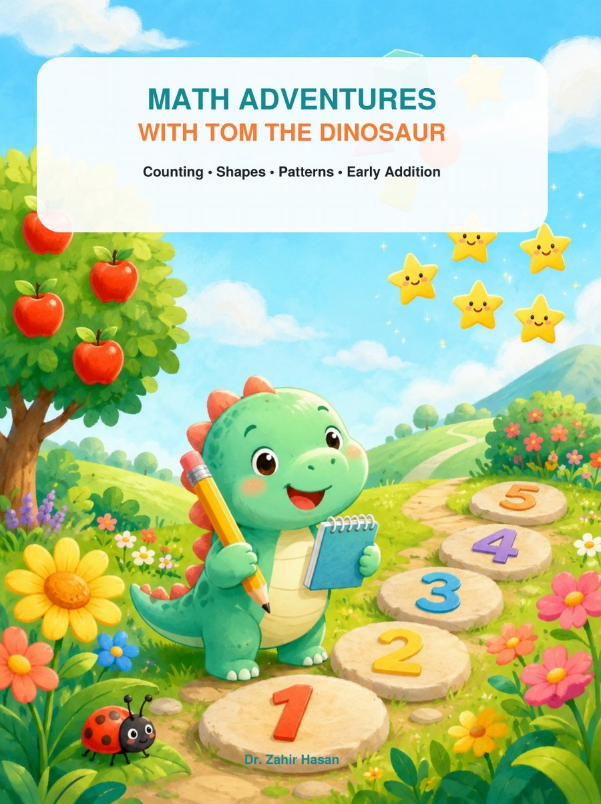

Math Adventures with Tom the Dinosaur
A Playful Activity Book for Ages 4 to 6 - Counting, Shapes, Patterns, Adding and Taking Away

Tom the Dinosaur loves numbers, and he would very much like some company. Across 72 full-colour pages, young learners count dinosaurs, trace the numbers from 0 to 10, hunt for shapes, finish patterns, and take their first steps into adding and taking away. Eight friendly dinosaurs turn up on nearly every page, and every page is made to be drawn on, coloured in, and done again tomorrow.
Inside you will find:
• Numbers 0 to 10, with big traceable numerals, counting and ten frames
• Shapes to trace, hunt for, sort and build pictures from
• Patterns to say out loud, finish and invent
• Comparing, sorting, ordering by size and measuring
• Gentle adding and taking away, with dinosaurs, number lines and ten frames to lean on
• Number-path puzzles, a maze, colour-by-number and a big final challenge
• A complete answer key, a short guide for grown-ups, and a certificate to finish on
Written for children aged 4 to 6, at home or in the classroom. Big artwork, one idea per page, and plenty of room for a wobbly pencil. All you need is a pencil, some crayons, and a little curiosity.
Ebook · Maple & Pine Press
- Author
- Dr. Zahir Hasan
- Publisher
- Maple & Pine Press, Tokyo
- List
- Children's Books